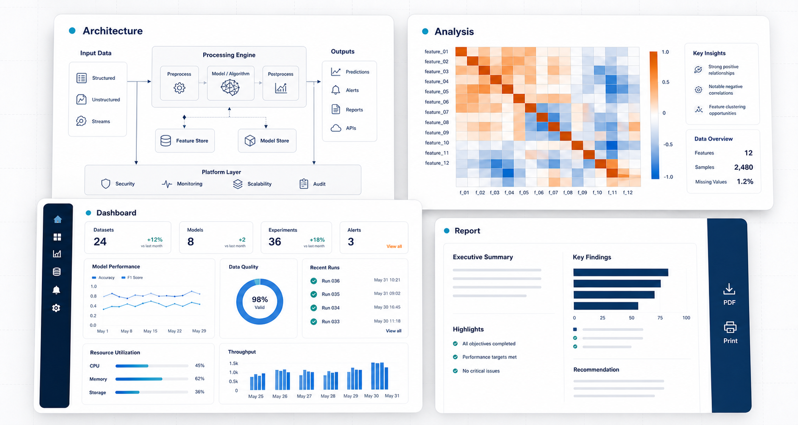

Website Development
Mobile-friendly sites for businesses, schools, churches, consultants, clinics and professional services.
Websites, digital forms, business documents and practical IT support for organisations that need clear digital communication and reliable service workflows.
Services are shaped around the organisation's goals, available content, timeline and support needs.
Mobile-friendly sites for businesses, schools, churches, consultants, clinics and professional services.
Review and rebuild outdated websites for clearer content, better mobile display and stronger enquiry flow.
Regular checks, content updates and small improvements that keep a business website useful after launch.
Online forms and spreadsheet workflows for enquiries, records, bookings, requests and simple internal processes.
Branded proposals, reports, pitch decks, forms and presentations.
Practical technology advice for software setup, website planning, digital tools and day-to-day workflow improvements.
Business websites are designed for mobile-first visitors, clear service information, visible contact options and a direct path from interest to enquiry.
